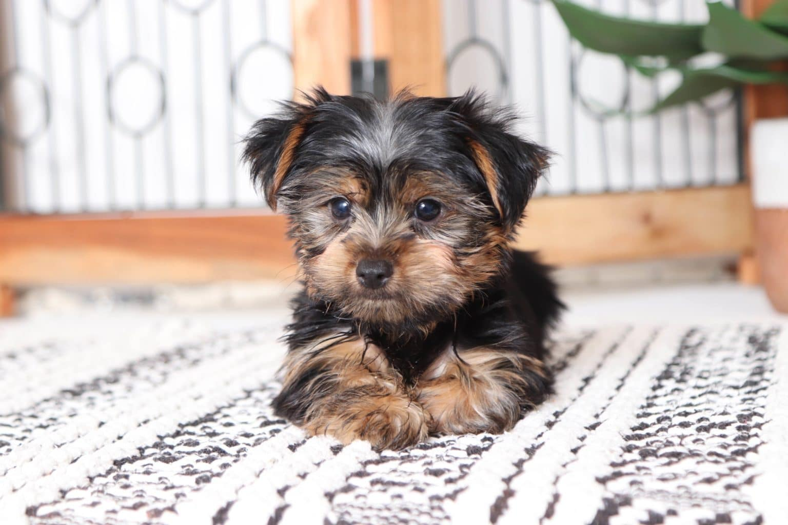

Briar Rose
Little Briar Rose is just like her name. Although a sweet and adorable puppy, she definitely knows how to stand up for herself. Although the runt of the litter, Briar is still able to play and wrestle around with her siblings! Little Briar is also very stubborn and confident, she will let nothing stand in her way, including her tiny size. She is also a very intelligent little yorkie and has already made significant progress in potty-training.
Snow White

Miss Snow White is the sweetest little yorkie you'll meet. Just like the princess she was named after, Snow has a very gentle and calm spirit. Not as wild as her younger siblings, she is perfectly content to sit and cuddle with her people all day. Snow is also the color of her snow, and being a parti yorkie makes her even more priceless. This little angel will likely not be available for long, so hurry and get her!
Hansel and Gretel

Brother and sister, Hansel and Gretel are an inseperable pair. Although all puppies are mischievous, these two do not cause as much trouble as Snow White and Briar. Instead, they play together and are able to entertain themselves WITHOUT getting into trouble. They are also very funny and adorable to watch. These two will definitely keep you laughing!

Faithfully serving the community of Hawaii for years, YORKIE PUPS, continues to provide wonderful yorkie puppies to the people of the area. We promise that if you purchase a puppy from us, you will not regret it!!!